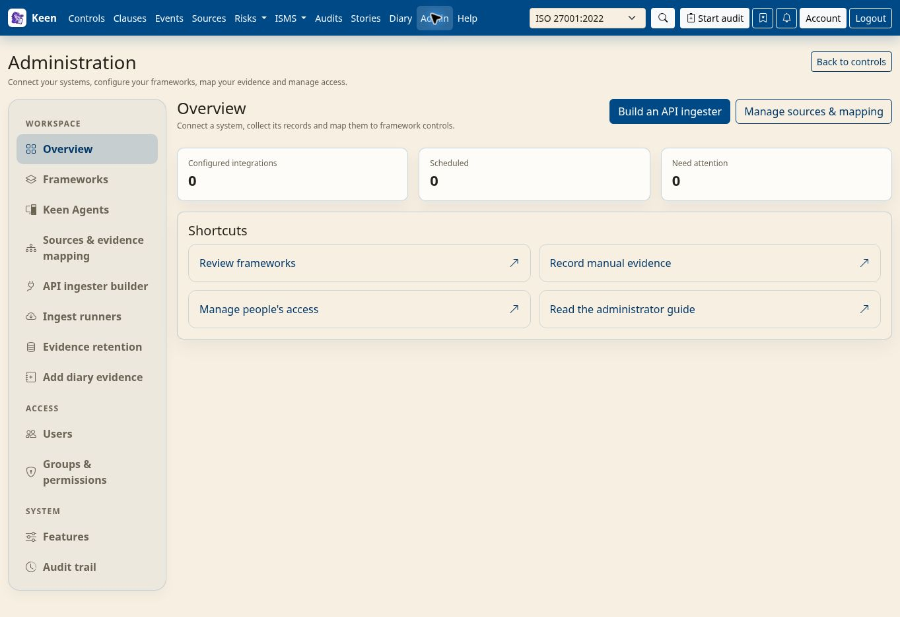
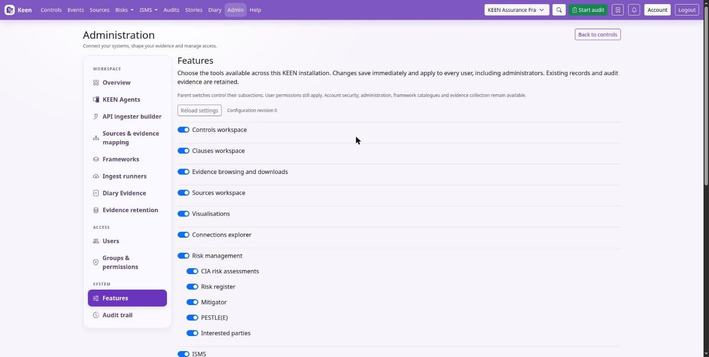

Administering Keen
Install and configure Keen
Chapter 1 of 30
Runtime and responsibilities
This chapter gets a self-managed Keen running: what the containers do, how to deploy and upgrade, the settings that matter on day one, and the Features switches that decide which parts of Keen your organisation sees.
Keen runs as a small set of services:
| Service | Role |
|---|---|
keen-ui | Serves the interface and proxies API requests. |
keen-api | The FastAPI application. Inbound webhooks, agent events and interactive catalogue lookups run here. |
keen-worker | Consumes the celery queue for internal jobs: notifications, cache refreshes, mapping backfills. |
keen-http-worker | Consumes ingest-http for built-in HTTP collectors, named connections and custom API ingester runs. |
keen-beat | Schedules the recurring work. |
| PostgreSQL, Valkey | Records; sessions, caches, job messaging and notifications. The optional IMAP profile adds its own worker and queue. |
Admin ingest runners queue collection and return a task ID. A queued confirmation means the job was accepted, so check the worker results and logs to see it finish.
Artefacts live in the configured local storage or S3-compatible storage, and the API and worker must see the same artefacts. PostgreSQL holds the references, mappings and configuration that give those objects meaning, so a complete backup includes both.
Expose only the UI listener. The external HTTPS proxy forwards to the UI listener (127.0.0.1:8081 in the supplied Compose file). PostgreSQL, Valkey and the API are never exposed directly, and the proxy scrubs client-supplied identity headers.
Going deeper: resources, capabilities and upgrades
The ordinary and HTTP workers each default to one child process; the HTTP worker is limited to 768 MiB, one CPU and 128 PIDs. Monitor host capacity and queue age when tuning concurrency. Python containers drop all Linux capabilities and prevent privilege escalation; normal network connections need none. Keep the artifact and scheduler volumes writable by the image user, UID 10001.
During an upgrade, stop scheduling and manual submissions and let collection jobs on the old default queue finish. Routing changes apply to new jobs only; do not purge existing jobs. Deploy matching API, worker and scheduler images and start keen-http-worker with them. Hosted demo provisioning also includes this worker. The standard Compose configuration includes pgdata, beatdata and artifacts volumes.
Deploy a self-managed installation
You need a supported Docker Engine and Compose plugin, DNS for the application, a trusted TLS certificate, and storage for the database and artefacts. The supplied Compose file uses the published Keen images and pins the PostgreSQL and Valkey images by digest, so docker compose pull fetches the builds reviewed for that release.
- Place the release files in the deployment directory and record the release or commit you used.
- Create a protected
.envfrom the release's settings: database, Valkey, public URL, authentication and artefact backend, with unique secrets. - Configure the HTTPS proxy and firewall, keeping internal services on the private Compose network.
- Pull the images, start the backing services, apply the migrations, then start the application services.
- Verify HTTPS, sign-in, the framework catalogues, an artefact round trip, one ingestion, and a restore into a separate test environment.
From the keen directory, with the supplied self-managed layout:
docker compose pull docker compose up -d postgres valkey docker compose run --rm keen-api alembic upgrade head docker compose up -d docker compose ps docker compose logs --tail=100 keen-api keen-worker keen-beat
The API startup script applies migrations as well; the explicit step makes a failure visible before the rest of an upgrade proceeds. Never run two migration processes against the same database.
Create the first administrator
Set KEEN_BOOTSTRAP_ADMIN_USERNAME and KEEN_BOOTSTRAP_ADMIN_PASSWORD before the first start. Once that administrator can sign in, remove both variables and recreate the containers; the database keeps the account and its current password. Migrations, workers and later API starts do not need them.
Going deeper: building locally and hosted mode
To build from source, run docker compose -f docker-compose.yml -f docker-compose.build.yml build before starting the backing services and applying migrations, and start the application with the same two files: docker compose -f docker-compose.yml -f docker-compose.build.yml up -d. The UI installs its pinned design-system dependency during the image build, and both Dockerfiles pin their base images by digest.
In hosted mode, owner provisioning uses the separate hosted bootstrap and never creates a generic shared administrator.
Configure the runtime
The definitive list of settings is services/api/app/core/config.py. Most fields use the KEEN_ prefix; some connector secrets have explicit aliases. Apply the same relevant settings to API, worker and beat, and recreate a container after changing its environment: editing .env on the host changes nothing in a running container.


Core and authentication settings
| Setting | Purpose |
|---|---|
KEEN_DATABASE_URL, KEEN_REDIS_URL | PostgreSQL and Valkey connections. |
KEEN_PUBLIC_BASE_URL | Required. The externally reachable origin, without a path, used for links in e-mails and messages and for browser origin checks. Keen does not start without it. |
KEEN_TIMEZONE, KEEN_UI_DATE_FORMAT | Installation defaults; users can set their own presentation preferences. |
KEEN_LOCAL_AUTH_ENABLED | Whether local sign-in is offered. |
KEEN_COOKIE_SECURE, KEEN_COOKIE_SAMESITE, KEEN_CSRF_COOKIE_SAMESITE, KEEN_COOKIE_DOMAIN | Cookie policy. Keep Secure on in production, pick SameSite values that suit your sign-in flow and test the full cross-site OIDC flow, and leave the domain empty for host-only cookies unless a reviewed deployment needs otherwise. |
KEEN_SESSION_TTL_SECONDS and the session-cookie name | Session lifetime. |
KEEN_SECURITY_TRUSTED_PROXY_CIDRS | The proxies in front of the API, including the supplied UI proxy. Without it every client shares the proxy address and per-address login limits apply to the whole installation. |
Native OIDC, Google and GitHub
Native OIDC uses KEEN_OIDC_ENABLED, the issuer, authorisation and token endpoints, the JWKS URI, client ID, client secret, scopes and an exact redirect URI. The redirect URI sits on KEEN_PUBLIC_BASE_URL and ends in /api/v1/auth/sso/oidc/callback, /api/v1/auth/sso/google/callback or /api/v1/auth/sso/github/callback for the provider concerned. Register the same address with the provider; Keen refuses provider sign-in until each enabled provider has its redirect URI set.
Google and GitHub have their own enablement, client and claim settings. Provision authorised local identities according to the selected mode, and keep automatic provisioning restricted to the identities you intend to admit.
Going deeper: token endpoint method, trusted proxies and hosted mode
KEEN_OIDC_TOKEN_ENDPOINT_AUTH_METHOD selects how Keen presents its client secret to the token endpoint: client_secret_basic (the default) or client_secret_post. Configure the matching logout URLs where supported, and keep TLS verification and the asymmetric algorithm allowlist.
Trusted remote-user mode requires a direct peer in KEEN_SECURITY_TRUSTED_PROXY_CIDRS and a proxy that strips incoming identity headers and supplies exactly one verified identity. Keep Uvicorn proxy-header rewriting disabled, as in the supplied startup script, and never trust a header from an internet client. Hosted mode disables local and trusted-header authentication and requires its configured owner subject and OIDC issuer.
Login rate limiting uses the configured window and per-IP and per-username limits, which makes Valkey availability security-critical as well as operationally important.
Storage, mail and privacy settings
KEEN_ARTIFACT_STORAGE_BACKEND selects the artefact backend and KEEN_ARTIFACT_LOCAL_DIR sets local storage. For S3, configure the bucket, region, endpoint and credentials; KEEN_S3_USE_INSTANCE_ROLE enables the AWS credential chain in the hosted integration, and its tenant role is never combined with broad static AWS credentials.
SMTP settings are KEEN_SMTP_HOST, port, username, password, TLS or SSL mode, sender address and name, and timeout. Match the TLS mode to the mail service.
Masking personal data
KEEN_EVENT_DATA_MASKING controls optional masking of e-mail and IP addresses, which are recognised by their shape:
truemasks every stored text field, structured payload and text artefact as evidence arrives, including mail headers such as From and To, where a display name written with its address is masked with it.samplesmasks the same text in evidence PDF and ZIP exports only.falsekeeps the data.
KEEN_SENSITIVE_KEYS removes the whole value of named fields instead. Sample PDF header and footer and the evidence filename prefix control export presentation; review an exported sample to confirm the wording and data treatment. Collect only what assurance needs, and treat automatic secret redaction as a safeguard that can miss an unusual secret.
Going deeper: scheduling and outbound webhooks
KEEN_SCHEDULED_AUDIT_CREATE_DAYS_AHEAD controls how far ahead scheduled audits are materialised. KEEN_REMINDER_DAYS_BEFORE (2 by default; 0 turns reminders off) sets how many days before an audit starts, or a quiz round falls due, its attendees and participants are reminded by email. The worker sends reminders once a day at 06:45 UTC, each recipient at most once and only to people whose account is active. It sends quiz invitations as rounds start, opens and closes quiz rounds daily at 00:20 UTC, and then invites anyone an open round has missed. Outbound question, reply and incident webhooks require HTTPS, validate and pin destination addresses, and follow KEEN_INGESTION_ALLOWED_CIDRS for private destinations; loopback and link-local destinations are rejected. Signing secrets and timeouts are configurable. Store them as secrets and test delivery without putting credentials in audit notes.
Choose the features available in Keen
Open Administration → Features to switch workspaces and tools on or off for the whole installation. Everything starts enabled, each switch saves immediately, and the status message confirms the change. Only administrators can change these settings.


A parent switch controls its children. Turning off ISMS makes SWOT, Objectives, documents, assets and its other subsections unavailable; turning off Risk management also turns off the Mitigator, CIA assessments, the risk register, PESTLE(E) and Interested parties. Child preferences are kept and return when the parent is enabled again.
Use these switches to control availability. They apply to everyone, administrators included, and the API rejects operations that belong to a disabled feature. Nothing is deleted: data, relationships and audit retention protections stay, and existing references can still appear in other enabled tools. A switch does not create a confidentiality boundary between users or erase information already downloaded.
Going deeper: individual switches and their side effects
- Audits, scheduled audits and sampling into audits have separate switches. Event sampling controls the PDF sampling action and adding event evidence to an audit.
- Questions controls asking, replying and the question workspaces. A question also follows the switch for the record it concerns: while evidence browsing is off, questions about events cannot be opened, asked or answered, and they leave My questions until it is on again. Incident actions can be disabled independently.
- Controls, Clauses, Sources, evidence browsing, framework visualisations and the connections explorer can be hidden. Shared framework and reference data stays available where other enabled tools need it, and evidence collection continues while evidence browsing is off. The Visualisations switch hides visualisation tabs and keeps existing evidence and relationships.
- Quizzes sit under ISMS. While Quizzes is off, quiz pages and My quizzes are unavailable, rounds neither open nor close and quiz emails pause; results already recorded on effectiveness measures stay. Audit attendee reminders follow the Audits switch.
- Account security, sign-in, administration and the administrative audit trail always remain available. Scheduled audit creation and automatic effectiveness measurements pause while their features are disabled, and question notifications queued before Questions was disabled are skipped. A request or job already admitted can finish.
- Changes take effect on subsequent API requests; reload an open page to refresh its navigation. If another administrator changes the settings while you are editing, Keen rejects the stale save. The configuration keeps a revision and the administrator responsible for each change.